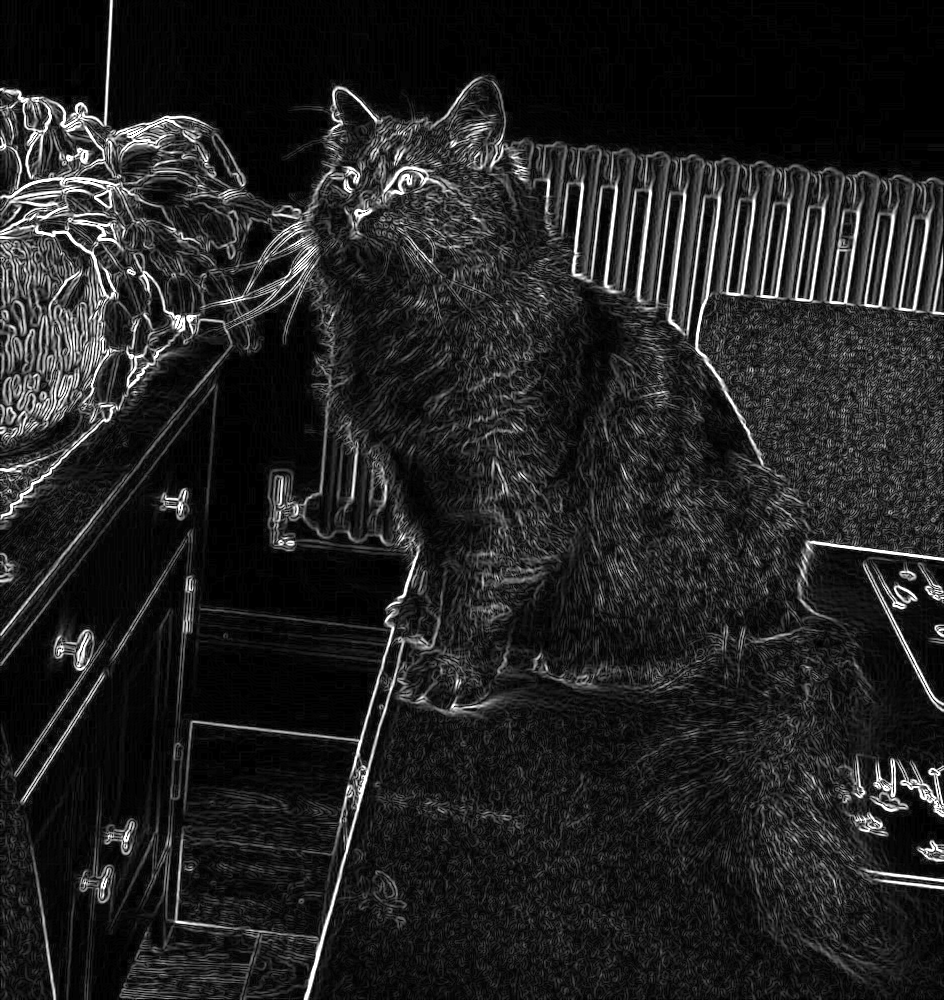
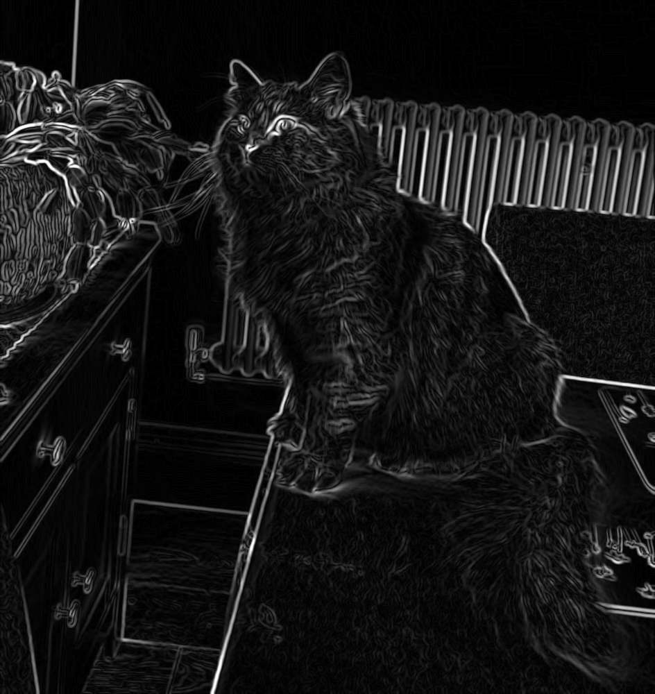

Below is the result of running Sobel edge detection on our example Cat. Notice how Cat and radiator borders start to blend in and the Cats fur borders are highlighted. Also shown is the same process after a box blur has been applied to the image.

